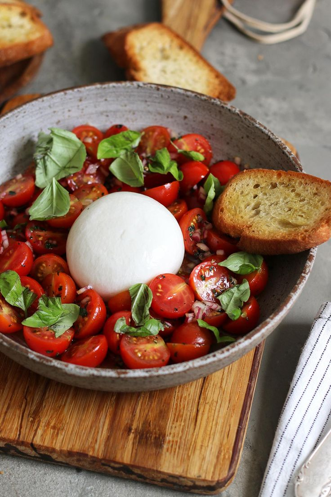
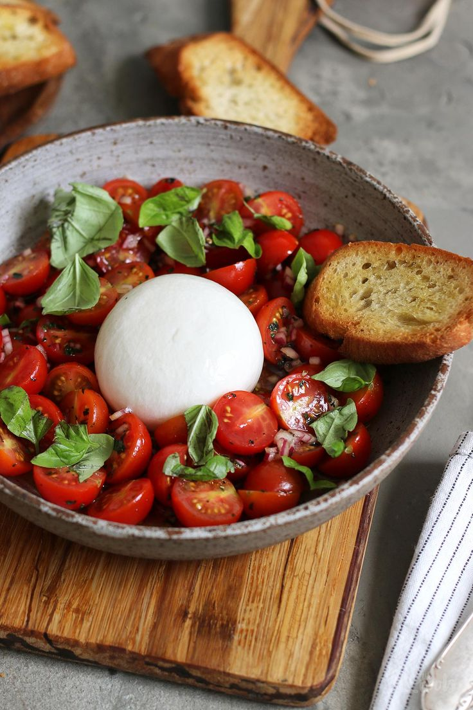

Caprese
La semplicità a tavola
Storia
L’insalata Caprese è uno dei piatti più iconici della cucina italiana, famosa per la sua semplicità e per la capacità di esaltare la qualità degli ingredienti freschi. Nasce sull’isola di Capri, nel cuore del Golfo di Napoli, e si dice che sia stata creata negli anni ’20 come omaggio alla bandiera italiana: il rosso vivo del pomodoro, il bianco candido della mozzarella e il verde brillante del basilico. Questo tricolore nel piatto non è solo un richiamo patriottico, ma anche un’espressione della cucina mediterranea nella sua forma più pura. Nel tempo, la Caprese è diventata un simbolo dell’estate italiana: fresca, leggera, genuina e amata in tutto il mondo. La sua popolarità è cresciuta grazie alla sua facilità di preparazione e alla bontà degli ingredienti quando sono scelti con cura. Ideale come antipasto, contorno o anche piatto unico nelle giornate più calde, è perfetta per chi cerca sapore senza rinunciare alla leggerezza.
Ingredienti (per 2-3 persone)
- Pomodori maturi
- Mozzarella fresca
- Basilico fresco
- Olio extravergine di oliva
- Sale q.b.
Procedimento
Inizia lavando con cura i pomodori sotto acqua corrente. Affettali a rondelle non troppo sottili, in modo che mantengano la loro consistenza. Fai lo stesso con la mozzarella, cercando di ottenere fette dello stesso spessore per una presentazione armoniosa. Su un piatto da portata, alterna le fette di pomodoro e mozzarella in cerchio o a strati, a seconda del tuo gusto estetico. Inserisci tra una fetta e l’altra alcune foglie di basilico fresco, intere o spezzettate con le mani per sprigionarne l’aroma.
Condisci il tutto con un filo generoso di olio extravergine di oliva e un pizzico di sale. Se vuoi, puoi aggiungere anche una macinata di pepe nero fresco o qualche goccia di aceto balsamico per un tocco più deciso, ma la versione classica non ne prevede. Servi subito, preferibilmente a temperatura ambiente, per gustare al meglio il sapore pieno dei pomodori e la morbidezza della mozzarella. Ottima da accompagnare con del pane casereccio o una focaccia leggera.
 
